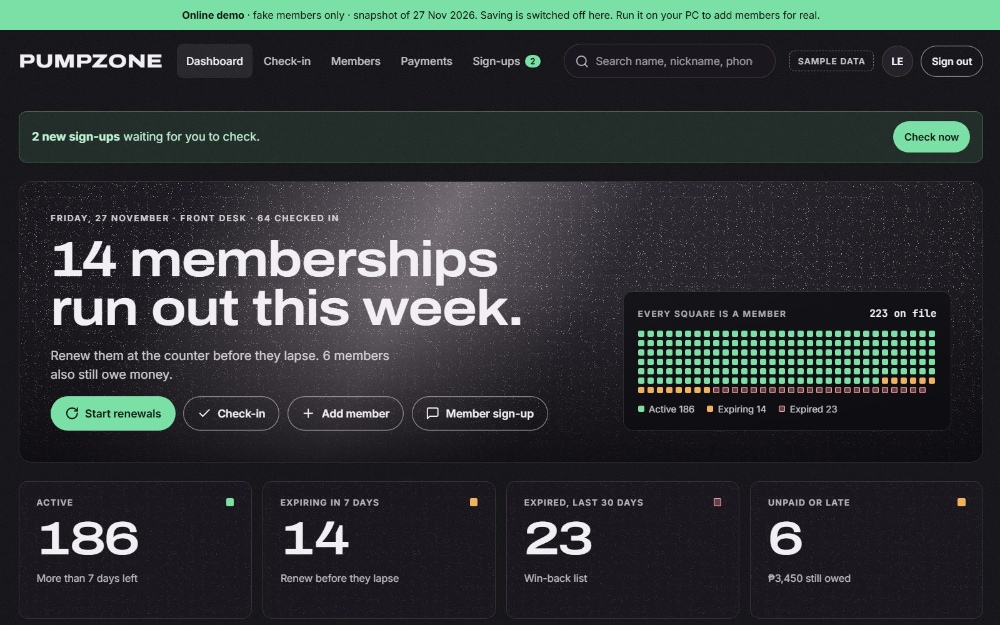
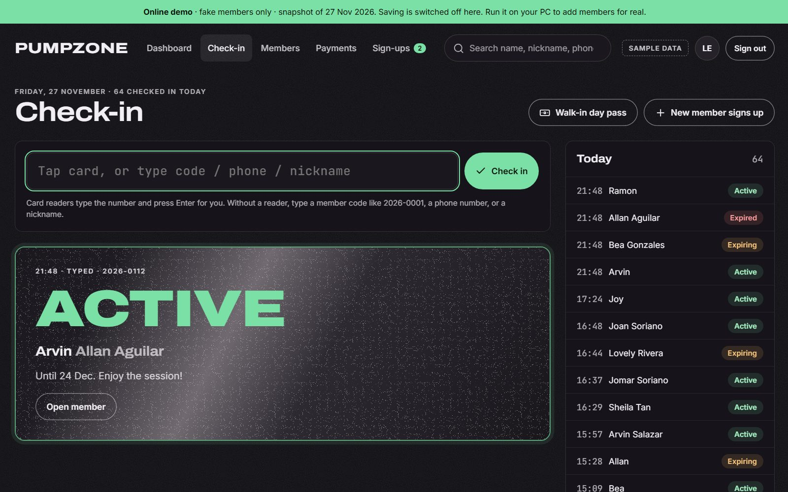
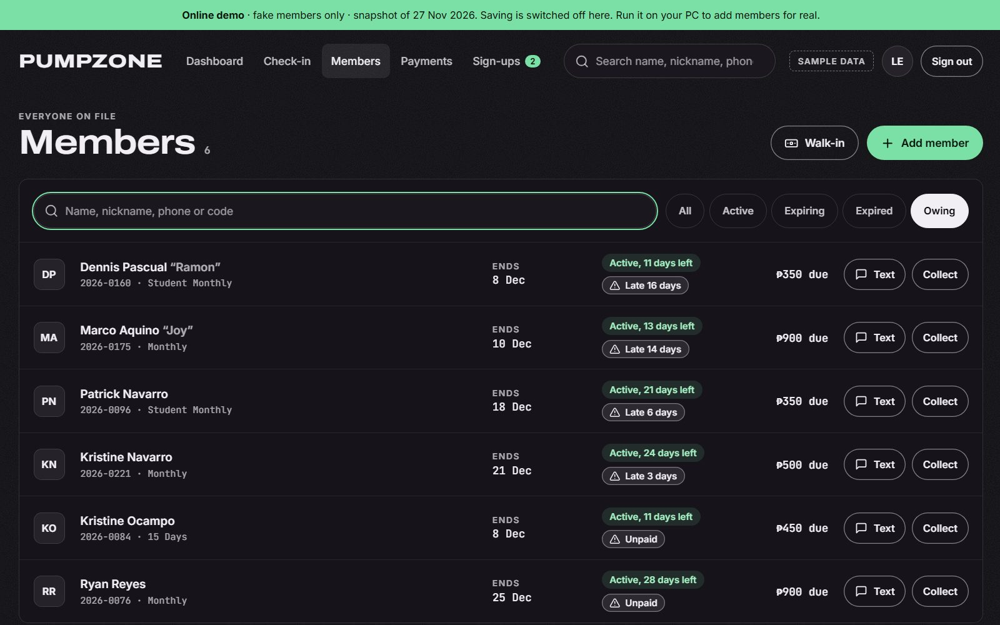
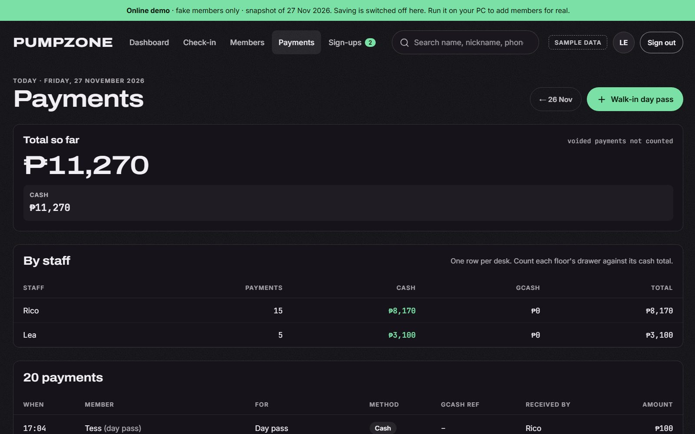

01
One screen for the desk
Who expires this week, who already lapsed and who still owes money, counted the moment the page opens.
A simple front-desk prototype that tracks a gym's members, payments and check-ins in place of the paper logbook.

Who expires this week, who already lapsed and who still owes money, counted the moment the page opens.

Tap a card on a USB reader or type a code, phone or nickname. Green, amber or red answers at a glance, and every visit is logged.

Filter members by status. Each balance shows how many days late it is, with a text reminder ready to send.

Cash or GCash, each payment carries the name of whoever took it, so every floor counts its own drawer.
Login, forms, the database layer and an admin panel come built in. One account per staff member means every payment says who took it, and the admin gives the owner a back office with no extra code.
A gym desk sees around a hundred visits a day, which one database file handles easily. A backup is a copy of that file, and WAL mode lets both floors' desks save at the same time.
Plain HTML from Django with a single hand-written stylesheet. No JavaScript framework, no build step and no API layer, so it opens on any phone browser and one part-time person can maintain it.
It only runs locally for now: one PC at the desk serves the app over the gym's Wi-Fi. Online hosting is still being decided with the owner.
GitHub Pages can only host fixed files, so it can't run Python or a database. The online demo is a read-only copy: you can click through every screen, but nothing saves.
To try the real, working system with its seeded data, download it and run it on your own PC. You need Python 3.12 or newer. Then sign in as owner with the password pumpzone-demo (a demo account that only exists on your PC).
git clone https://github.com/gedon111/pumpzone-gym-systempython -m venv .venv.venv\Scripts\python.exe -m pip install -r requirements.txt.venv\Scripts\python.exe manage.py migrate.venv\Scripts\python.exe manage.py seed_demo.venv\Scripts\python.exe manage.py runserverthen open http://127.0.0.1:8000Every member in the demo is fake: phone numbers all start with 0900 000, and real data never goes into the repo.